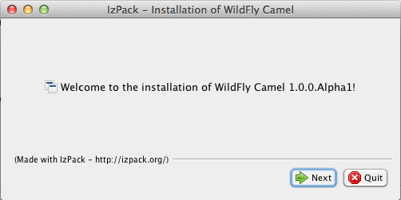
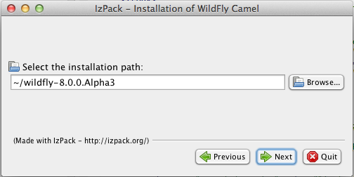

java -jar wildfly-camel-installer-1.0.0.Alpha1.jar
This chapter takes you through the first steps of getting WildFly Camel and provides the initial pointers to get up and running.
Camel support is not part of WildFly. The WildFly-Camel project provides examples, documentation and the subsystem that adds Camel functionality to WildFly.
WildFly-Camel is distributed as an IzPack installer archive. The installer is available from the WildFly-Camel download area.
WildFly can be downloaded from the WildFly download area.
To run the WildFly-Camel Installer execute the following command:
java -jar wildfly-camel-installer-1.0.0.Alpha1.jar
The installer first shows a welcome screen

On the following screens you'll be asked to select the WildFly distribution that is used to install the Camel Subsystem.
If you're curious checkout the install-definition.xml file to see what is actually being written.

When you start up WildFly
[tdiesler@localhost wildfly-8.0.0.Alpha3]$ bin/standalone.sh -c standalone-camel.xml
you should see something like this
========================================================================= JBoss Bootstrap Environment JBOSS_HOME: .../wildfly-8.0.0.Alpha3 JAVA: /Library/Java/JavaVirtualMachines/jdk1.7.0_25.jdk/Contents/Home/bin/java JAVA_OPTS: ... ========================================================================= 09:33:06,486 INFO [org.jboss.modules] (main) JBoss Modules version 1.2.4.Final 09:33:06,713 INFO [org.jboss.msc] (main) JBoss MSC version 1.2.0.Beta2 09:33:06,781 INFO [org.jboss.as] (MSC service thread 1-6) JBAS015899: WildFly 8.0.0.Alpha3 "WildFly" starting ... 09:33:07,493 INFO [org.wildfly.camel] (MSC service thread 1-4) JBAS020000: Activating Camel Subsystem 09:33:07,499 INFO [org.wildfly.camel] (MSC service thread 1-6) JBAS020001: Register camel context: system-context-1 09:33:07,507 INFO [org.jboss.as.naming] (ServerService Thread Pool -- 19) JBAS011800: Activating Naming Subsystem 09:33:07,510 INFO [org.jboss.as.webservices] (ServerService Thread Pool -- 23) JBAS015537: Activating WebServices Extension ... 09:33:07,623 INFO [org.wildfly.camel] (MSC service thread 1-7) JBAS020002: Bound camel naming object: java:jboss/camel/CamelContextFactory 09:33:07,681 INFO [org.jboss.ws.common.management] (MSC service thread 1-3) JBWS022052: Starting JBoss Web Services - Stack CXF Server 4.2.0.CR1 ... 09:33:09,457 INFO [org.apache.camel.spring.SpringCamelContext] (MSC service thread 1-6) Apache Camel 2.11.0 (CamelContext: system-context-1) is starting 09:33:09,467 INFO [org.apache.camel.management.ManagementStrategyFactory] (MSC service thread 1-6) JMX enabled. 09:33:09,553 INFO [org.apache.camel.impl.converter.DefaultTypeConverter] (MSC service thread 1-6) Loaded 172 type converters 09:33:09,687 INFO [org.apache.camel.spring.SpringCamelContext] (MSC service thread 1-6) Route: route1 started and consuming from: Endpoint[direct://start] 09:33:09,688 INFO [org.apache.camel.management.DefaultManagementLifecycleStrategy] (MSC service thread 1-6) Load performance statistics enabled. 09:33:09,699 INFO [org.apache.camel.spring.SpringCamelContext] (MSC service thread 1-6) Total 1 routes, of which 1 is started. 09:33:09,700 INFO [org.apache.camel.spring.SpringCamelContext] (MSC service thread 1-6) Apache Camel 2.11.0 (CamelContext: system-context-1) started in 0.243 seconds 09:33:09,703 INFO [org.wildfly.camel] (MSC service thread 1-6) JBAS020001: Register camel context: system-context-1 09:33:09,704 INFO [org.wildfly.camel] (MSC service thread 1-6) JBAS020002: Bound camel naming object: java:jboss/camel/CamelContextRegistry 09:33:09,739 INFO [org.jboss.as] (Controller Boot Thread) JBAS015961: Http management interface listening on http://127.0.0.1:9990/management 09:33:09,739 INFO [org.jboss.as] (Controller Boot Thread) JBAS015951: Admin console listening on http://127.0.0.1:9990 09:33:09,739 INFO [org.jboss.as] (Controller Boot Thread) JBAS015874: WildFly 8.0.0.Alpha3 "WildFly" started in 3559ms
Camel Contexts can be configured in standalone-camel.xml as part of the subsystem definition like this
<subsystem xmlns="urn:jboss:domain:camel:1.0">
<camelContext id="system-context-1">
<![CDATA[
<route>
<from uri="direct:start"/>
<transform>
<simple>Hello #{body}</simple>
</transform>
</route>
]]>
</camelContext>
</subsystem>
On WildFly startup you should see something like this
10:01:29,213 INFO [org.wildfly.camel] (MSC service thread 1-7) JBAS020001: Register camel context: system-context-1 10:01:29,214 INFO [org.wildfly.camel] (MSC service thread 1-1) JBAS020002: Bound camel naming object: java:jboss/camel/CamelContextRegistry
There are two ways to deploy a Camel Context to WildFly
As a single XMl file with a predefined -camel-context.xml file suffix
As part of another WildFly supported deployment as META-INF/jboss-camel-context.xml file
When deployed as XML file, you should see
10:20:01,621 INFO [org.jboss.as.server.deployment] (MSC service thread 1-3) JBAS015876: Starting deployment of "simple-transform-camel-context.xml" ... 10:20:01,893 INFO [org.apache.camel.spring.SpringCamelContext] (MSC service thread 1-1) Apache Camel 2.11.0 (CamelContext: spring-context) is starting ... 10:20:01,945 INFO [org.apache.camel.spring.SpringCamelContext] (MSC service thread 1-1) Route: route13 started and consuming from: Endpoint[direct://start] 10:20:01,949 INFO [org.apache.camel.spring.SpringCamelContext] (MSC service thread 1-1) Apache Camel 2.11.0 (CamelContext: spring-context) started in 0.056 seconds 10:20:01,955 INFO [org.wildfly.camel] (MSC service thread 1-1) JBAS020001: Register camel context: spring-context ... 10:20:01,963 INFO [org.jboss.as.server] (management-handler-thread - 7) JBAS018559: Deployed "simple-transform-camel-context.xml" (runtime-name : "simple-transform-camel-context.xml")
When deployed as part of another deployment, you should something similar
10:24:02,649 INFO [org.jboss.as.server.deployment] (MSC service thread 1-6) JBAS015876: Starting deployment of "camel-module.jar" ... 10:24:02,882 INFO [org.apache.camel.spring.SpringCamelContext] (MSC service thread 1-1) Apache Camel 2.11.0 (CamelContext: spring-context) is starting ... 10:24:02,935 INFO [org.apache.camel.spring.SpringCamelContext] (MSC service thread 1-1) Route: route14 started and consuming from: Endpoint[direct://start] 10:24:02,940 INFO [org.apache.camel.spring.SpringCamelContext] (MSC service thread 1-1) Apache Camel 2.11.0 (CamelContext: spring-context) started in 0.058 seconds 10:24:02,945 INFO [org.wildfly.camel] (MSC service thread 1-1) JBAS020001: Register camel context: spring-context ... 10:24:02,952 INFO [org.jboss.as.server] (management-handler-thread - 11) JBAS018559: Deployed "camel-module.jar" (runtime-name : "camel-module.jar")
WildFly Camel provides feature provisioning similar to Karaf features. A feature is defined as set of abstract Resources with associated Capabilities/Requirements. All known features are stored in a Repository. At runtime the Provisioner gets a set of Resource candidates from the Repository and uses the Resolver to find a consistent wiring solution for the current state of the Environment. After this no-impact analysis, the Provisioner installs the required set of Resources to the Environment if a consistent wiring solution can be found by the Resolver.
The initial set of supported features is part of the WildFly Camel repository content definition. Resources that are already part of the WildFly environment are defined as part of the environment content
A good starting point to work with WildFly Camel feature provisioning is ProvisionerSupport and references to it.
The concepts of Resource, Capability, Requirement, Resolver, Repository, Provisioner are all provided by the Gravia project, which is a rewrite of the same functionality that used to be available in WildFly as part of the JBoss OSGi integration.
WildFly Camel feature provisioning has no dependency on OSGi.
ProvisionerSupport provisionerSupport = new ProvisionerSupport(provisioner); provisionerSupport.installCapabilities(IdentityNamespace.IDENTITY_NAMESPACE, "camel.cxf.feature"); ...
WebService support is provided through the camel-cxf component which integrates with the WildFly WebServices subsystem that also uses Apache CXF.
ProvisionerSupport provisionerSupport = new ProvisionerSupport(provisioner);
provisionerSupport.installCapabilities(IdentityNamespace.IDENTITY_NAMESPACE, "camel.cxf.feature");
...
// Create the CamelContext
CamelContext camelctx = contextFactory.createWildflyCamelContext(getClass().getClassLoader());
camelctx.addRoutes(new RouteBuilder() {
@Override
public void configure() throws Exception {
from("direct:start").
to("cxf://" + getEndpointAddress("/simple") + "?serviceClass=" + Endpoint.class.getName());
}
});
camelctx.start();
ProducerTemplate producer = camelctx.createProducerTemplate();
String result = producer.requestBody("direct:start", "Kermit", String.class);
Assert.assertEquals("[Hello Kermit]", result);
Messaging support is provided through the camel-jms component which integrates with the WildFly Messaging (HornetQ) subsystem
ProvisionerSupport provisionerSupport = new ProvisionerSupport(provisioner);
provisionerSupport.installCapabilities(IdentityNamespace.IDENTITY_NAMESPACE, "camel.jms.feature");
...
// Create the CamelContext
CamelContext camelctx = contextFactory.createWildflyCamelContext(getClass().getClassLoader());
camelctx.addRoutes(new RouteBuilder() {
@Override
public void configure() throws Exception {
from("jms:queue:" + QUEUE_NAME + "?connectionFactory=ConnectionFactory").
transform(body().prepend("Hello ")).to("direct:end");
}
});
camelctx.start();
// Send a message to the queue
ConnectionFactory cfactory = (ConnectionFactory) initialctx.lookup("java:/ConnectionFactory");
Connection connection = cfactory.createConnection();
sendMessage(connection, QUEUE_JNDI_NAME, "Kermit");
String result = consumeRouteMessage(camelctx);
Assert.assertEquals("Hello Kermit", result);
The WildFlyCamelContext provides integration with the WildFly Naming subsystem.
WildflyCamelContext camelctx = contextFactory.createWildflyCamelContext(getClass().getClassLoader());
// Bind a bean to JNDI
Context context = camelctx.getNamingContext();
context.bind("helloBean", new HelloBean());
camelctx.addRoutes(new RouteBuilder() {
@Override
public void configure() throws Exception {
from("direct:start").beanRef("helloBean");
}
});
camelctx.start();
ProducerTemplate producer = camelctx.createProducerTemplate();
String result = producer.requestBody("direct:start", "Kermit", String.class);
Assert.assertEquals("Hello Kermit", result);
context.unbind("helloBean");
Management support is provided through the camel-jmx component which integrates with the WildFly JMX subsystem.
ProvisionerSupport provisionerSupport = new ProvisionerSupport(provisioner);
provisionerSupport.installCapabilities(IdentityNamespace.IDENTITY_NAMESPACE, "camel.jmx.feature");
...
CamelContext camelctx = contextFactory.createWildflyCamelContext(getClass().getClassLoader());
camelctx.addRoutes(new RouteBuilder() {
@Override
public void configure() throws Exception {
String host = InetAddress.getLocalHost().getHostName();
from("jmx:platform?format=raw&objectDomain=org.apache.camel&key.context=" + host + "/system-context-1&key.type=routes&key.name=\"route1\"" +
"&monitorType=counter&observedAttribute=ExchangesTotal&granularityPeriod=500").
to("direct:end");
}
});
camelctx.start();
ConsumerTemplate consumer = camelctx.createConsumerTemplate();
MonitorNotification notifcation = consumer.receiveBody("direct:end", MonitorNotification.class);
Assert.assertEquals("ExchangesTotal", notifcation.getObservedAttribute());
The WildFly Camel test suite uses the WildFly Arquillian managed container. This can connect to an already running WildFly instance or alternatively start up a standalone server instance when needed.
A number of test enrichers have been implemented that allow you have these WildFly Camel specific types injected into your Arquillian test cases.
@ArquillianResource
CamelContextFactory contextFactory;
@ArquillianResource
CamelContextRegistry contextRegistry;
The integration tests are best executed against a running server.
[tdiesler@localhost wildfly-camel]$ cd itests [tdiesler@localhost itests]$ mvn clean install ------------------------------------------------------- T E S T S ------------------------------------------------------- Running org.wildfly.camel.test.jms.MessagingTestCase Tests run: 4, Failures: 0, Errors: 0, Skipped: 0, Time elapsed: 5.11 sec Running org.wildfly.camel.test.provision.FeatureProvisionTestCase Tests run: 1, Failures: 0, Errors: 0, Skipped: 0, Time elapsed: 0.291 sec Running org.wildfly.camel.test.smoke.BeanTransformTestCase Tests run: 1, Failures: 0, Errors: 0, Skipped: 0, Time elapsed: 0.201 sec Running org.wildfly.camel.test.smoke.SimpleTransformTestCase Tests run: 1, Failures: 0, Errors: 0, Skipped: 0, Time elapsed: 0.171 sec Running org.wildfly.camel.test.smoke.SpringBeanDeploymentTestCase Tests run: 1, Failures: 0, Errors: 0, Skipped: 0, Time elapsed: 0.713 sec Running org.wildfly.camel.test.smoke.SpringBeanTransformTestCase Tests run: 1, Failures: 0, Errors: 0, Skipped: 0, Time elapsed: 0.451 sec Running org.wildfly.camel.test.smoke.SpringContextDeploymentTestCase Tests run: 1, Failures: 0, Errors: 0, Skipped: 0, Time elapsed: 0.404 sec Running org.wildfly.camel.test.smoke.SpringContextTestCase Tests run: 1, Failures: 0, Errors: 0, Skipped: 0, Time elapsed: 0.327 sec Running org.wildfly.camel.test.smoke.SystemContextTestCase Tests run: 1, Failures: 0, Errors: 0, Skipped: 0, Time elapsed: 0.09 sec Results : Tests run: 12, Failures: 0, Errors: 0, Skipped: 0 [INFO] ------------------------------------------------------------------------ [INFO] BUILD SUCCESS [INFO] ------------------------------------------------------------------------ [INFO] Total time: 16.168s [INFO] Finished at: Fri May 24 14:47:16 CEST 2013 [INFO] Final Memory: 60M/229M [INFO] ------------------------------------------------------------------------
We support execution of single tests like this
[tdiesler@localhost itests]$ mvn -Dtest=MessagingTestCase test
To run the tests from the IDE you need to set these system properties
-Djava.util.logging.manager=org.jboss.logmanager.LogManager
-Dwildfly.camel.home=${workspace_loc:wildfly-camel-build}/target/wildfly-camel-1.0.0-SNAPSHOT
Remote debugging can be enabled in bin/standalone.conf